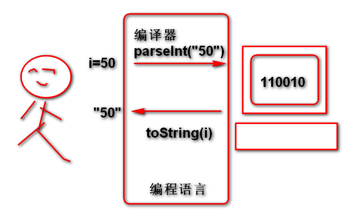
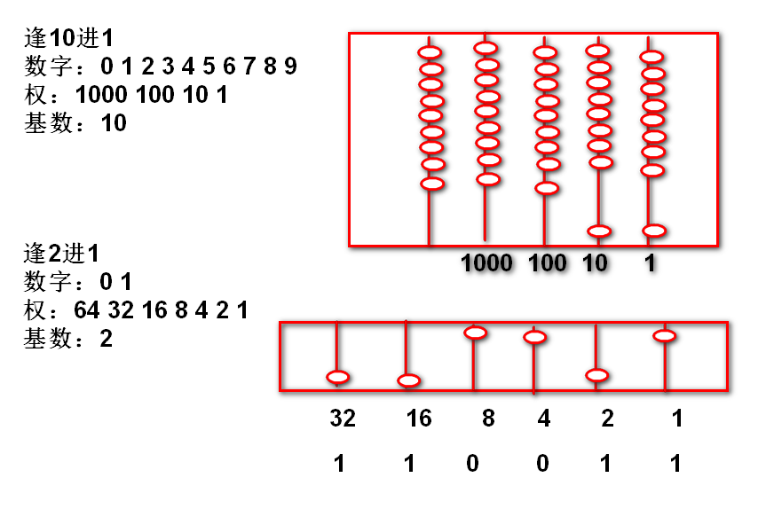
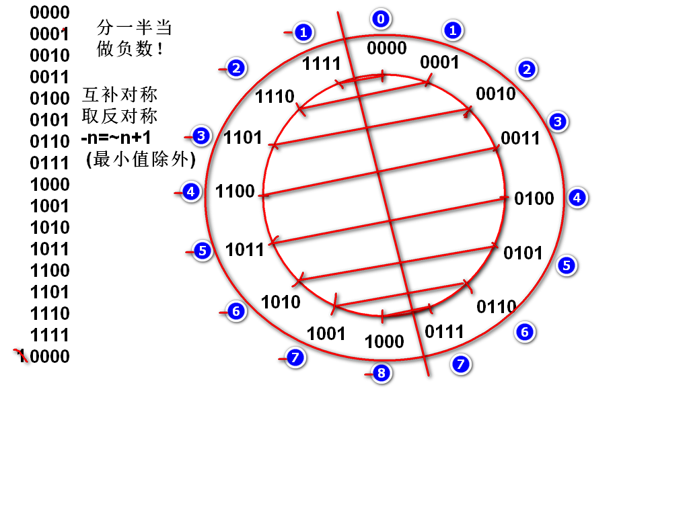
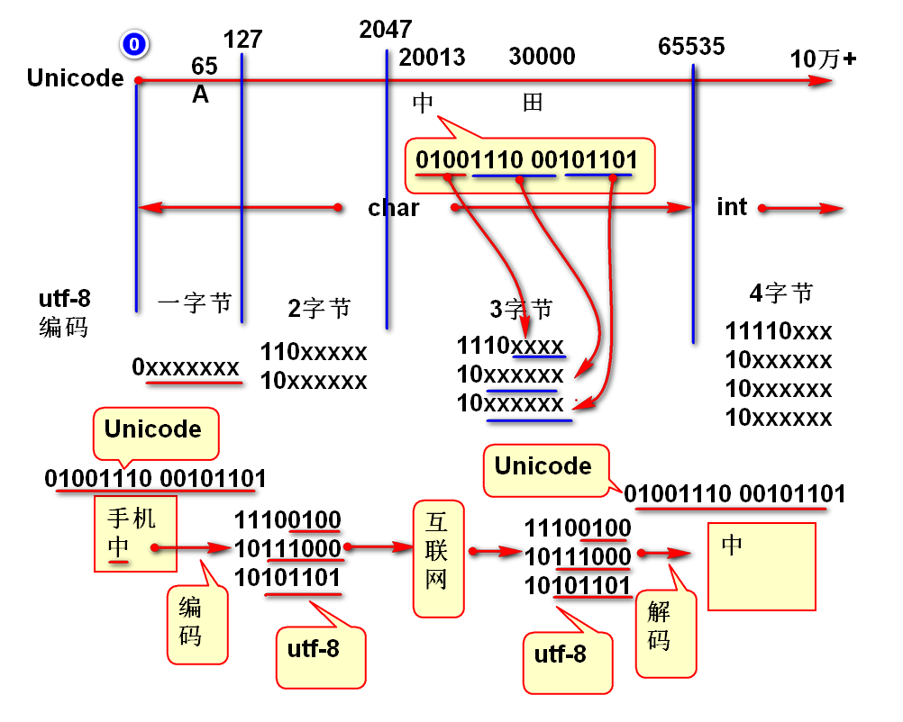

逢2进一的计数规则。
2进制的计算机成本最优。
原则： 计算机内部的一切都是2进制数据！

案例：
int i = 50;
//i 在计算机内部就是2进制的！
System.out.println(Integer.toBinaryString(i));
System.out.println(i);//"50"
逢2进一的计数规则。

案例：
public static void main(String[] args) {
for(int i=0;i<=50; i++){
System.out.println(
Integer.toBinaryString(i));
}
}
16进制：用于简写（缩写）2进制数据。可以将每个4位2进制缩写为一个16进制数
2进制的书写非常繁琐
01101001 00111111 01010101 01110101
案例：
public static void main(String[] args) {
int n = 0x693ba5e5;
System.out.println(
Integer.toBinaryString(n));
// 将2进制缩写为16进制，并且验证缩写的正确性
// 01110101 11111101 10101111 01011110
// 7 5 f d a f 5 e
n = 0x75fdaf5e;
System.out.println(
Integer.toBinaryString(n));
n = 50;
System.out.println(
Integer.toBinaryString(n));
}

案例：
public static void main(String[] args) {
for(int i=-50; i<=50; i++){
System.out.println(
Integer.toBinaryString(i));
}
}
案例：
public static void main(String[] args) {
int max = Integer.MAX_VALUE;
System.out.println(
Integer.toBinaryString(max));
int min = Integer.MIN_VALUE;
System.out.println(
Integer.toBinaryString(min));
max = 0x7fffffff;
min = 0x80000000;
int i = 0xffffffff;
System.out.println(max);
System.out.println(min);
System.out.println(i);//-1
}
补码的互补对称现象： public static void main(String[] args) { int n = -3; System.out.println( Integer.toBinaryString(n)); System.out.println( Integer.toBinaryString(~n)); System.out.println( Integer.toBinaryString(~n+1)); int m = ~n+1; System.out.println(m);//3 }
经典面试题：
int i = 0xffffffff;
System.out.println(i);
如上代码的输出结果：
A.2147483647 B.-2147483648 C.2147483648 D.-1
答案: D
int i = 0x80000000;
System.out.println(i);
如上代码的输出结果：
A.2147483647 B.-2147483648 C.2147483648 D.-1
答案： B
正数溢出数负数 （错的）
正数溢出以后是随机数（错的）
int n = 5;
System.out.println(~n+1);
答案：（-5）
int n = 5;
System.out.println(~n);
答案：（-6）
int n = -5;
System.out.println(~n);
答案：（4）
int n = 0xfffffffe; //11111111 11111111 11111111 11111110
System.out.println(~n);//00000000 00000000 00000000 00000001
答案：（1）
位运算的用途： 文字的编码

字符： char 类型 16位 互联网数据： 8位
如果利用互联网传送字符吗必须将字符拆分为byte（8位）进行传送
将字符拆分为字节的拆分方案称为字符的编码。
最简单的拆分方案： UTF-16BE， 将字符一分为二，无论中文还是英文都是2字节编码。英文浪费1个字节，支持65535个字符。
A: 00000000 01000001 65
B: 00000000 01000010 66
中：01001110 00101101 20013
Unicode: 一个符号一个不重复的数，已经编码了10万+个符号了。
Java char类型支持编码数量： 65535 个字符，Java 建议利用int类型支持扩展的Unicode。
UTF-8：变长编码，英文一个字节，中文3字节，支持4字节编码，支持100万+字符。
输出字符的Unicode
public static void main(String[] args) {
int n = '中';
System.out.println(
Integer.toBinaryString(n));
}
规则：
0 & 0 = 0
0 & 1 = 0
1 & 0 = 0
1 & 1 = 1
两个数，对其位置，上下计数与
案例：
n = 00000000 00000000 01001110 00101101
m = 00000000 00000000 00000000 00111111 mask 掩码
k=n&m 00000000 00000000 00000000 00101101
代码：
int n = 0x4e2d;
int m = 0x3f;//掩码
int k = n&m;
System.out.println(Integer.toBinaryString(n));
System.out.println(Integer.toBinaryString(m));
System.out.println(Integer.toBinaryString(k));
规则:
0 | 0 = 0
0 | 1 = 1
1 | 0 = 1
1 | 1 = 1
案例：
n = 00000000 00000000 00000000 10000000
m = 00000000 00000000 00000000 00101011
k =n|m 00000000 00000000 00000000 10101011
代码：
int n = 0x80;
int m = 0x2b;
int k = n|m;
System.out.println(Integer.toBinaryString(n));
System.out.println(Integer.toBinaryString(m));
System.out.println(Integer.toBinaryString(k));
n = 00000000 00000000 01001110 00101101
案例： 将字符数据（Unicode）编码为UTF-8编码
int c = '中';
int b3 = 0x80|c&0x3f;
int b2 = 0x80|(c>>>6) & 0x3f;
int b1 = 0xe0|(c>>>12) & 0xf;
案例： 将UTF-8编码解码为字符数据（Unicode）
int cc =((b1 & 0xf)<<12) |
((b2 & 0x3f)<<6) |
(b3 & 0x3f);
char ch = (char)cc;
System.out.println(ch);
移动小数点计算：
如： 1234278. 小数点向右移动
结果 12342780. 相差10倍
结果 123427800. 相差100倍
如果小数点不动，则数字向左移动
如： 1234278. 小数点向右移动
结果 12342780. 相差10倍
结果 123427800. 相差100倍
推广： 2进制时候数字向左移动一次数字扩大2倍！
案例：
n = 00000000 00000000 00000000 00110010 50
m = n<<1 0000000 00000000 00000000 001100100 100
k = n<<2 000000 00000000 00000000 0011001000 200
代码验证
int n = 50;
int m = n<<1;
int k = n<<2;
输出 n m k 的2进制和10进制数据
面试题目：
优化计算 n*8 为 （ ）
答案： n<<3
数学右移位 >> ： 其结果满足数学规律, 整除向小方向取整，负数移位，高位补1 结果还是负数。
n = 00000000 00000000 00000000 00110010 50
m = n>>1 000000000 00000000 00000000 0011001 25
k = n>>2 0000000000 00000000 00000000 001100 12
n = 11111111 11111111 11111111 11001110 -50
m = n>>1 111111111 11111111 11111111 1100111 -25
k = n>>2 1111111111 11111111 11111111 110011 -13
逻辑右移位 >>> ： 无论正负高位都补0！
n = 00000000 00000000 00000000 00110010 50
m = n>>>1 000000000 00000000 00000000 0011001 25
k = n>>>2 0000000000 00000000 00000000 001100 12
n = 11111111 11111111 11111111 11001110 -50
m = n>>>1 011111111 11111111 11111111 1100111
k = n>>>2 0011111111 11111111 11111111 110011
面试题目
优化计算表达式 n=n+n/2 (n+=n/2) n>0
答案： n += n>>1
完成方法（只考虑全部是中文情况）：
//将utf8编码的字节数组解码为字符串
public static String toString(byte[] utf8){
}
//将字符串编码为UTF8字节数组
public static byte[] utf8(String str){
}
//将一个字符编码为UTF8数组
public static byte[] utf8(char ch){
}
//将UTF8数组解码为一个字节
public char toChar(byte[] bytes){
}